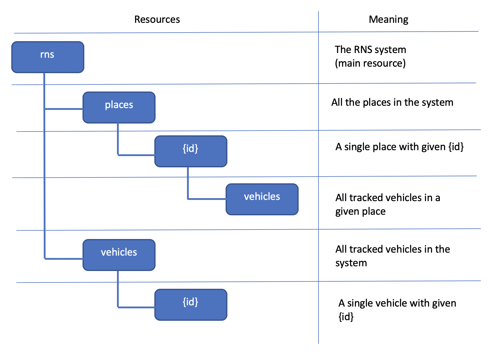

In my design the main resource is rns, then I have 2 sub-resources that are places and vehicles.
From both of them is it possible to access a single place or vehicle specifying the proper id in the path and perform some operation on them.
Moreover from rns/places/{id} is it possible to access all tracked vehicles in that place by following the uri 'rns/places/{id}/vehicles'.
All the decisions were taken according to the given specifications.
In my design there is not data replication and it respects the minimization of number of interaction with the server.
For more informations about allowed methods on resources (and relative request/response body) please follow this link